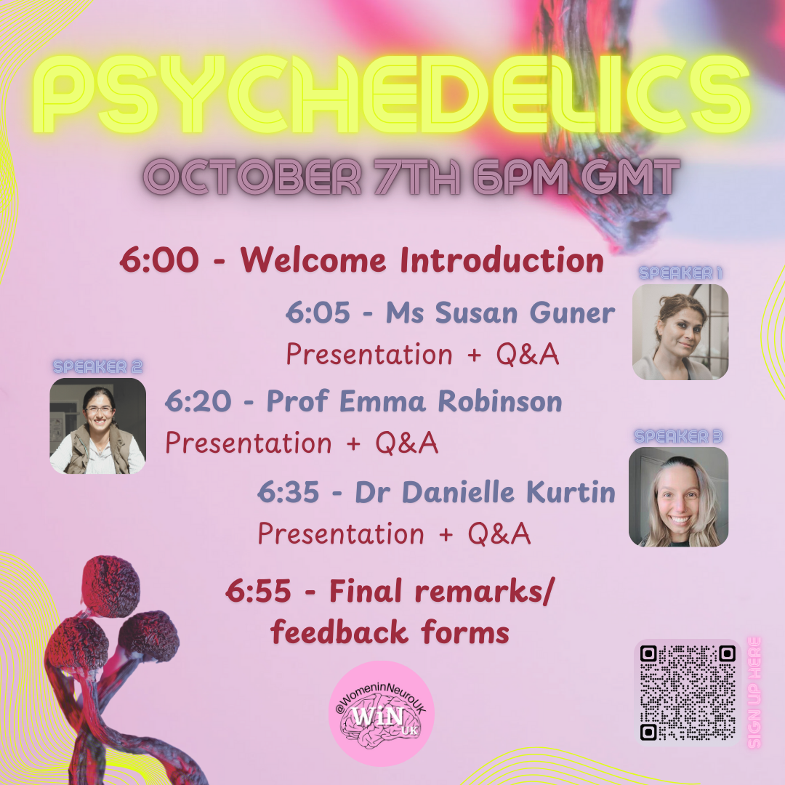
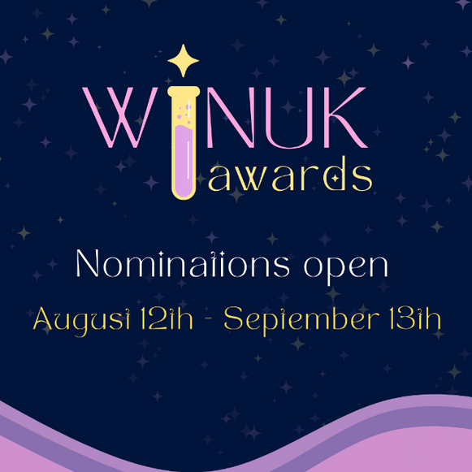
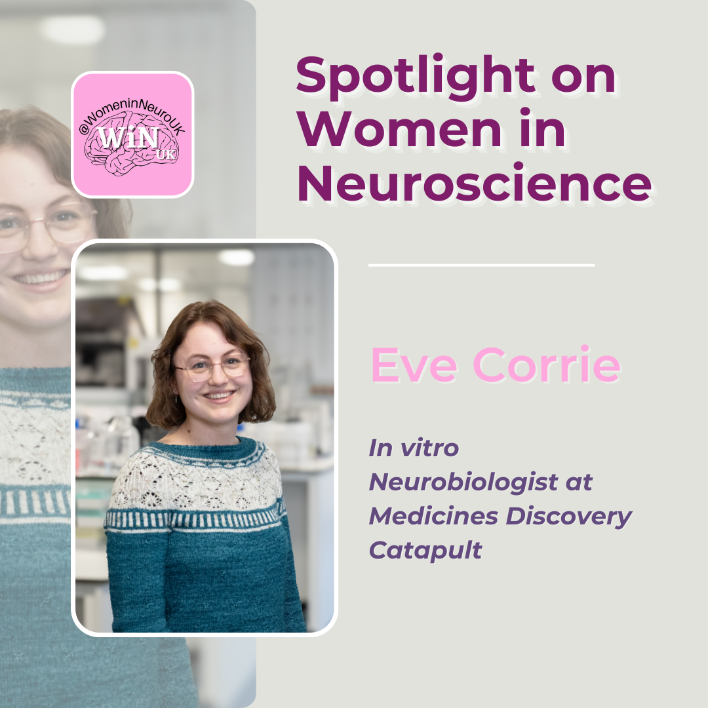
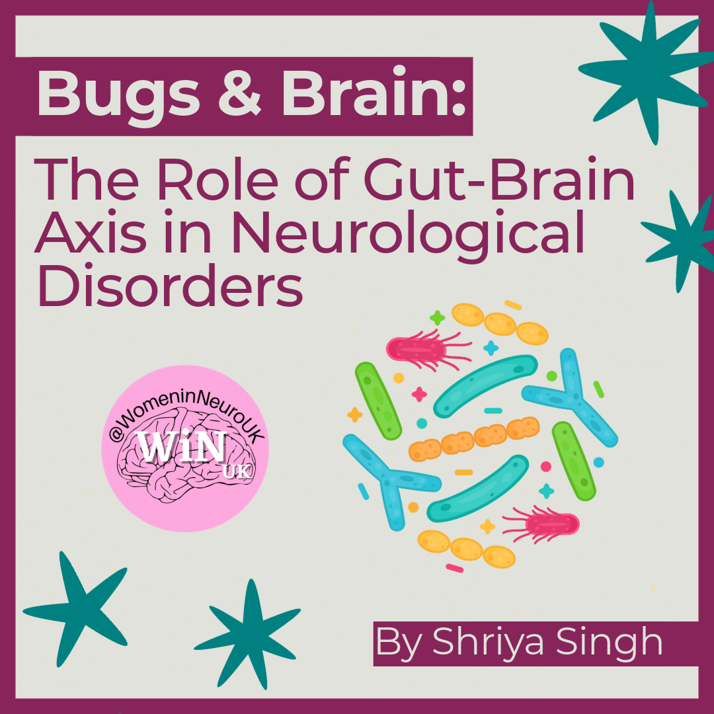
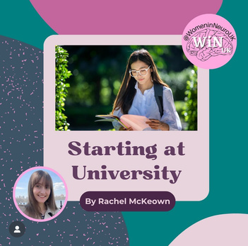

HELLO WINUK COMMUNITY,
As summer comes to an end and we go back to our routines, September
reminds us of what we have left on pause and motivates us to strive
for the better.
In September, we raise particular awareness on Alzheimer’s disease
and challenge the stigma around dementia. Memory loss is not part of
normal ageing and a diagnosis of dementia profoundly affects the
patient and their loved ones. However, even if a memory could have a
short retention for affected patients, the feelings associated with
it remain deeply imprinted. At WiNUK we support research on dementia
and Alzheimer through events, blogs and social advertisements aimed
at raising awareness and facilitating collaborative research in the
field.
NEW VOLUNTEERS
Secretaries:
- Love: Coordinator
- Anna: Secretary
- Alejandra: Social Secretary
- Daisy: Meetings Chair
- Meg: Schedule Manager
- Kerry: Outreach Officer
- Chloe: Sponsorships and Grants Officer
Social Media:
- Riya: Video Creator
- Isabella: Impact Evaluator
In-Person Events:
- Sakaorna: Deputy Coordinator
- Jaimee: Creative Director
- Shauna: Engagement Specialist
- Tracy / Jia: Logistics
- Karnika: Logistics
- Bethany: Impact Evaluator
Virtual Events:
- Nada: Officer
- Kimran: Promotion
- Shauna: Engagement Specialist
- Lucy: Host
Thank you to our new HR team for your support with interviewing
and onboarding!
UPCOMING EVENTS
WiNUK Awards
Nominations are closed!
Nominations for our awards are now closed for WiNUK Awards 2024!
Thank you to everyone who took the time to make a nomination. It
was fantastic to see over 100 nominations made, with nominators
and nominees from across the UK. Our expert judging panels are
currently scoring your nominations with nominees anonymised to
reduce biasing. The shortlist of nominees for each award will be
shared at the end of October. Email invitations to shortlisted
nominators and nominees will be circulated thenkeep your eyes
peeled!
Sponsorship
Would you like to advance your organisations commitment to
champion diversity, address inequalities, and support an inclusive
workforce?
Our upcoming in person event, WiNUK Awards 2024 ,
aims to celebrate diverse role models who have made significant
contributions to research advances and/or inclusive workplaces.
Sponsoring an award at our event is a powerful way to
demonstrate your support for women in neuroscience
who are driving research advances and those fostering inclusive
neuroscience communities. This public acknowledgement of your
commitment to these vital values is something that we all look
forward to celebrating!
Contact our Partnerships team to discuss award sponsorship
today:
partner.womeninneuroscience.uk@gmail.com
UPCOMING EVENTS
Psychedelics
- Date: Monday 7th October
- Time: 6-7pm BST
- Hosts/organisers:Sirjan & Aarushi

Join us on the 7th of October from 6-7pm as we dive into the world
of psychedelics and their impacts on the brain.
Our speakers include Ms. Susan Guner, a holistic psychotherapist
and host of the Psychedelics Conversations podcast, who will share
insights into how psychedelics are helping those suffering from
illness, Professor Emma Robinson, Professor of Psychopharmacology
who will explore her research on affective biases and emotional
behaviour in rodents using psychedelic drugs, and Dr Danielle
Kurtin, a research fellow at Imperial College London who
investigates the neural underpinnings of substance
(mis)use/dependence.
Sign up here:
https://docs.google.com/forms/d/e/1FAIpQLScd6AvU_ofSZSCR4q17_l0Eb9arBwY6kibSEIg
RC2rNDh57WA/viewform?usp=sf_link
SOCIALS RECAP
WiNUK Awards
We hope you have been following the countdown for #WiNUKAwards2024.
Keep an eye out for more information to come about the event!
Make sure to celebrate and recognise those driving change in
sex/gender research, mentorship, science communication, and
diversity in STEM 🧠 using the #WiNUKAwards2024

🌟 Join the Present Your Lab Technique (PYLT) Series with WiNUK! 🌟
Are you passionate about neuroscience and eager to share your
expertise? Look no further than the PYLT series, presented by WiNUK!
What is PYLT?
PYLT stands for Present Your Lab Technique, an initiative that
shines a spotlight on diverse lab techniques in neuroscience.
Whether you're an early-career researcher or a senior professional,
PYLT offers a platform to showcase your innovative methods.
Breaking Barriers, Changing Perceptions
At WiNUK, we believe in breaking down barriers to accessing the
field of neuroscience. PYLT is more than just a series—it's a
movement towards inclusivity and diversity in science. We challenge
stereotypes and celebrate the unique contributions of scientists
from all backgrounds.
Why Participate?
- Visibility: Reach a wider audience of
neuroscience enthusiasts, researchers, and students.
- Impact: Inspire the next generation of scientists
by sharing your knowledge and passion.
- Community: Join a supportive network of
like-minded individuals dedicated to advancing neuroscience and
gender equity.
How to Get Involved:
Participating in PYLT is easy! Simply submit your lab technique
video, graphic or photos to WiNUK. Our team will review submissions
and provide support throughout the process. Whether you're
showcasing cutting-edge technologies or classic methodologies, your
contribution is valued.
Ready to Present Your Lab Technique?
Submit your proposal today:
https://forms.gle/bScMYzhHNdgQw1CU7
BLOG ‘MONTH IN REVIEW’
Over the last month, we posted lots of exciting articles. We:

Discussed moving from academia to industry in our
interview with in vitro neurobiologist, Eve Corrie
Linked gut health to research neurological disorders

Unpacked the gender pain gap in neuroscience research

Gave you some crucial advice for starting your university
journey
BLOG
Fancy writing for the WiNUK blog , but not sure what to write about?
Not to worry - the editors regularly put together a collection of
prompts to get you started.
REALITY
Section Editor: Lauren Wallis
-
Starting another academic year - tips and tricks on how to
prepare
- Impostor syndrome - what can we do to combat it?
RESEARCH
Section Editor: Julia Dabrowska
REVIEW
Section Editor: Rebecca Pope
-
In honour of migraine awareness week, review Oliver Sack’s
‘Migraine’
-
Review the NeuroBio 2024 conference (13th September, York)